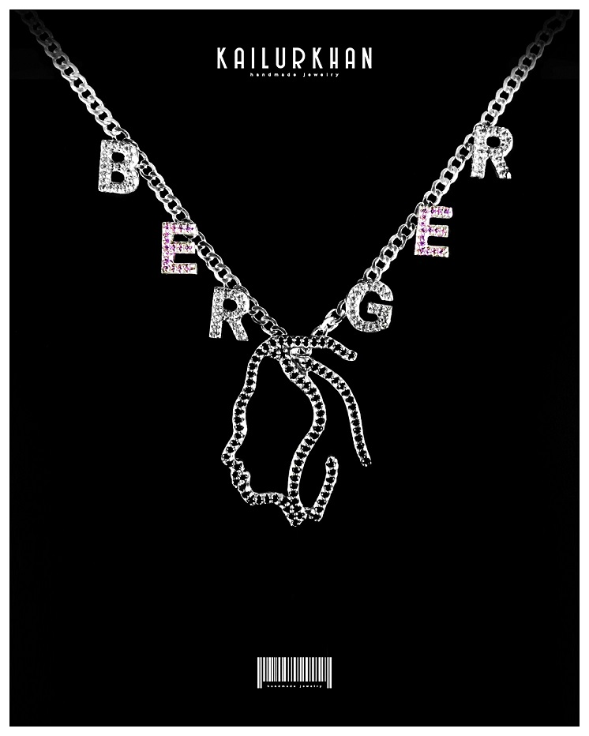

Info:
A piece of art as a chain, to bring the name and the career from the client to the foreground. The beginning of the YouTube career and the birthday was engraved on the logo. All together with the small letters as little pendants which resembles the last name of the client himself, will it impact the viewer in a artistic way.
Client:
Gloria BergerMaterial:
40g Argentium silver rhodium lookStones:
200 pieces 6A qualitywhite/ pink / black CZ
Story:
In the process of creation of this chain, was the logo of the brand from the client the main thing to make it as authentic as possible. The black stones which are set in the logo are giving the same a almost pen draw look. The small letters was set on the chain in a way to resemble the last name of the client himself so that the external viewer can read it from left top to the right top. The two E letters having pink stones in them, to create together with the white and black stones a very unique optical effect.
